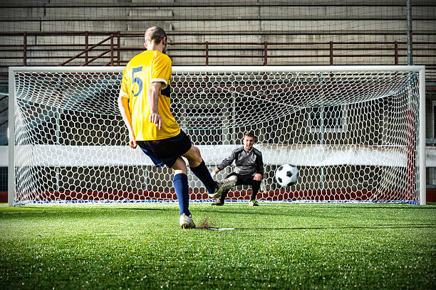

⚽ Futebol Mundial ⚽
Este é o site que o Murilo está desenvolvendo em HTML5, CSS E JS.
🏃🏽Grandes Jogadores De Futebol🏃🏼
- Pelé
- Ronaldinho Gaúcho
- Roberto Carlos
- Cristiano Ronaldo
- Messi
- Lewandovski Mario Robert Lewandowki nascido em 21 de agosto de 1988 na Polônia, atualmente é capitão do Bayern de Munique e da seleção Polonesa, Lewandowski é o melhor atacante do mundo de 2021 pois ganhou o prêmio da bola de ouro
- Neymar Neymar conhecido como Neymito nascido em 5 de Fevereiro de 1992 em Mogi das Cruses em São Paulo, atualmente é ponta esquerda e ele é camisa 10
Edson Arantes Do Nacimento, mais conhecido como PELÉ, é um ex jogador de Futebol BRASiLEIRO que atuava como atacante, O PELÉ é conciderado o rei do futebol, Pelé fez 757 gols em toda a sua carreira ele jogou no Santos e no New York Cosmos Pelé se aposentou com 36 anos.
Ronaldinho Gaúcho é um jogador BRASiLEIRO, Ronaldinho sempre driblou bem a sua melhor fase foi no barça, Ronaldinho marcou 276 gols em toda sua carreira, Ronaldinho atuou no Atletico Mineiro ,GrÊmio ,Flamengo e entre outros times.
Roberto Carlos, nascido em 10 de abril 1973, é um ex futebolista que atuava como lateral-esquerdo Roberto Carlos foi um dos melhores laterais-esquerdo da história.
Cristiano Ronaldo Santos da Silva nascido em 5/2/85 em Portugal em ilha da madeira Cristiano tem 5 bolas de ouro e Cr7 bateu a marca de pulo mais alto do futebol atinjindo 2,71metros de altura.
Messi é apelidado de E.T. pela sua habilidade Messi tem 6 bolas de ouro ele iniciou a carreira com 11 anos de idade Lionel jogou apenas no barça e no psg.